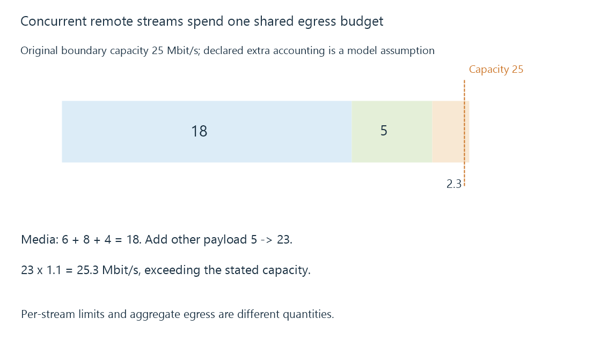

Upload bandwidth and simultaneous remote streams
Upload bandwidth limits the server-side egress used by remote streams and competing traffic, with payload peaks and accounting overhead affecting the total demand.
During remote playback, the household running Emby sends media outward. Its upload direction can be the narrow part of the route even when the viewer has a fast download connection.
The available egress is shared by the active streams and other outgoing work.
Add the concurrent demand at one boundary
Use an original twenty-five-Mbit/s boundary budget:
{
"capacityMbitPerSecond": 25,
"streamPayloadsMbitPerSecond": [6, 8, 4],
"otherPayloadMbitPerSecond": 5,
"declaredExtraPerPayloadFraction": 0.1
}
The media payloads total eighteen Mbit/s. Adding the other payload gives twenty-three.
For this arithmetic exercise only, allow an additional tenth of those payload bits at the same constrained boundary. The accounted requirement becomes 25.3 Mbit/s, exceeding the twenty-five-Mbit/s budget.

The added fraction is a teaching assumption, not a universal protocol-overhead percentage. A comparison using already measured useful capacity should not count the same overhead twice.
Per-stream limits do not create one aggregate allowance
Emby documents its internet streaming bitrate limit as a per-stream control.
If three streams each use a ten-Mbit/s allowance, their allowed aggregate can reach thirty before other traffic. A ten-Mbit/s per-stream setting does not mean the entire server sends at most ten.
Concurrent-stream limits and per-user controls add their own policy. They do not increase the physical egress capacity.
Peak intervals still need delivery room
A variable-rate presentation can require more data during some intervals than its whole-programme average.
The client can absorb some variation through available media reserve. Several viewers can also request bursts at similar times, while backups or uploads compete at the same gateway.
The budget therefore needs the active timeline rather than only a sum of long averages. Congestion develops the queue when arrivals exceed service.
Measure the direction the stream actually uses
A remote client’s download test to a nearby commercial endpoint does not measure the Emby household’s outgoing path.
The useful comparison places the sender, receiver and direction on the actual route. A direct local stream can avoid the internet uplink entirely; a remote path cannot assume that local capacity.
See Also
- Network throughput and useful delivery rate
- Network congestion and competing arrival rates
- Quality of service, classification and scheduling
- Adaptive bitrate streaming and representation selection